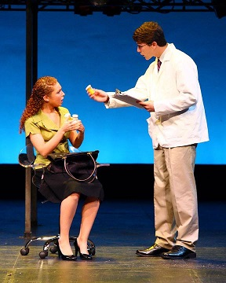
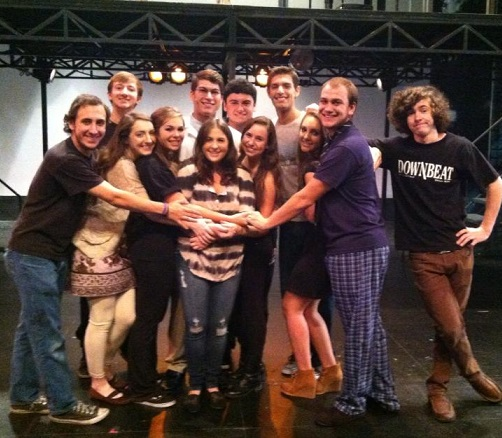
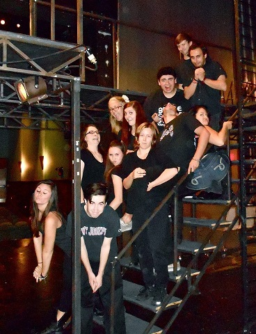

"Crazy is Perfect"
Synopsis
Next to Normal is a rock musical opening on Broadway in 2009. The story follows a less-than-perfect family and their struggles with depression, anxiety, and each other. Though the show's plot is not necessarily a happy one, the music is uplifting and fun. It's book and lyrics are by Brian Yorkey and the music is by Tom Kitt. Original cast includes: Alice Ripley, Jennifer Damiano, J. Robert Spencer, Adam Chanler-Beret, Aaron Tveit, and Louis Hobson.
Songs include: "Perfect For You", Superboy and the Invisible Girl", "Hey", and "Light"
SJU
The SJU Theatre Company performed Next to Normal in the fall of 2013. The music in this show is one of my all-time favorites, so this show was a blast to work on. A smaller cast/crew than usual, we really bonded with each other and loved every minute we spent together.
Fun Fact
During a dinner scene, mashed potatoes are scooped out onto plates, and one night they completely fell on the floor.
  